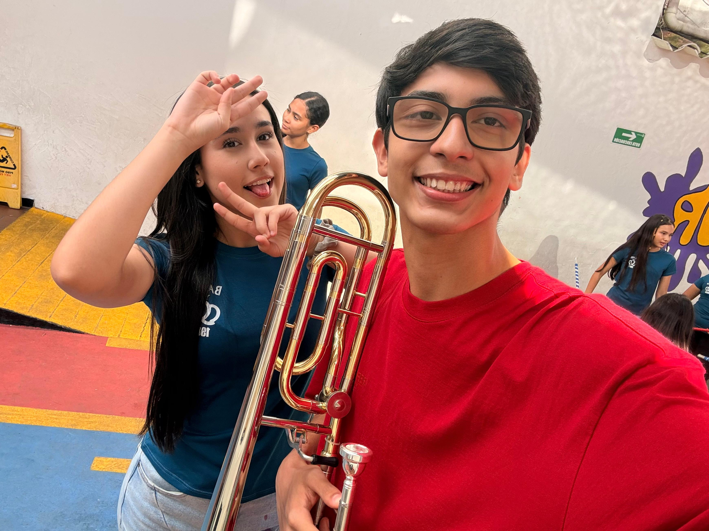

Soy Eliel Sánchez, tengo 15 años, nací el 13 de Agosto del 2010 en Táchira, Venezuela. Actualmente vivo en Santander, Colombia y soy estudiante de grado décimo en el Colegio Niño Jesús de Praga en San Juan de Girón. Me destaco por mis habilidades cognitivas, soy buen estudiante, tengo buenos resultados y siempre trabajo en mi futuro, algunas de mis pasiones principales son la música y la matemática. Desde pequeño siempre me interesaron los números, y tengo buena capacidad aritmética. Hace no mucho, empecé en el camino de la música, mi instrumentro principal es el trombón, el cual empecé a tocar hace 2 años cuando entré a la banda marcial de mi colegio. Quizás cuando sea grande progrese profesionalmente como trombonista o como ingeniero, aún me queda mucho por aprender en cada ámbito del conocimiento y tengo ansias por lo que mi destino tenga preparado.

Aquí estoy yo en banda marcial con mi trombón y mi mejor amiga